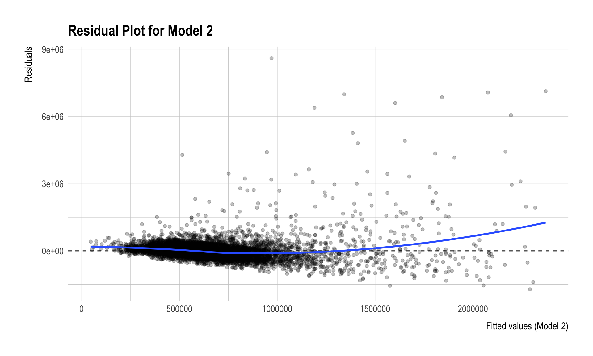
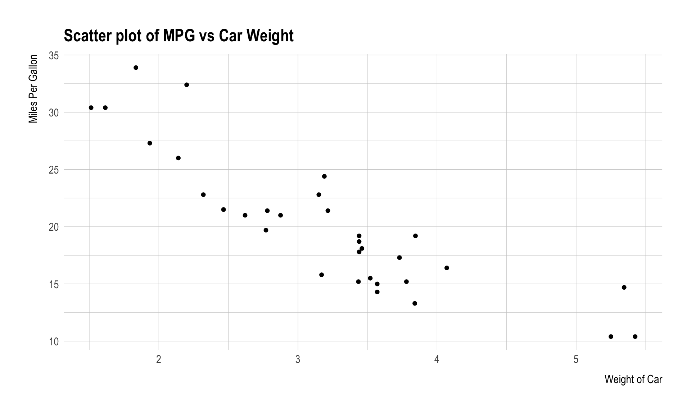
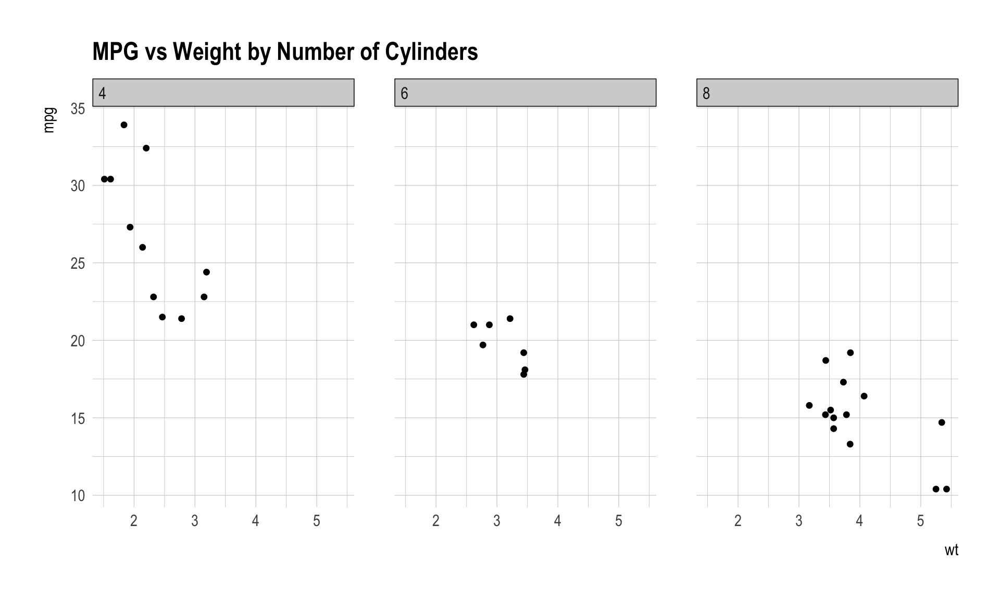

Code
library(tidyverse)
library(skimr)DANL 320: Big Data Analytics
to run entire lines of code within code chunk
Mac: command + shift + return
To run a current line of code within a code chunk
Mac: command + return
library(tidyverse)
library(skimr)#Linear Regression in R
sale_df <- read_csv("https://bcdanl.github.io/data/home_sales_nyc.csv")
set.seed(123) # for replication
sale_df <- sale_df |>
mutate(gp = runif(n()))
dtrain <- sale_df |> filter(gp >= 0.4) # ~60%
dtest <- sale_df |> filter(gp < 0.4) # ~40%
nrow(dtrain)/nrow(sale_df)[1] 0.6032523colnames(sale_df) [1] "sale.date" "borough"
[3] "borough_name" "neighborhood"
[5] "building_class_category" "zip_code"
[7] "sale_price" "residential_units"
[9] "commercial_units" "total_units"
[11] "land_square_feet" "gross_square_feet"
[13] "year_built" "sale_year"
[15] "age" "gp" m1 <- lm(sale_price ~ gross_square_feet, data = dtrain)
summary(m1)
Call:
lm(formula = sale_price ~ gross_square_feet, data = dtrain)
Residuals:
Min 1Q Median 3Q Max
-1677677 -208583 -41403 135661 8667468
Coefficients:
Estimate Std. Error t value Pr(>|t|)
(Intercept) -36232.101 14615.843 -2.479 0.0132 *
gross_square_feet 460.373 8.957 51.400 <2e-16 ***
---
Signif. codes: 0 '***' 0.001 '**' 0.01 '*' 0.05 '.' 0.1 ' ' 1
Residual standard error: 461900 on 7640 degrees of freedom
Multiple R-squared: 0.2569, Adjusted R-squared: 0.2569
F-statistic: 2642 on 1 and 7640 DF, p-value: < 2.2e-16dtest <- dtest |>
mutate(pred_m1 = predict(m1, newdata = dtest))
# Test RMSE
rmse_m1 <- dtest |>
mutate(resid_sq = (sale_price - pred_m1)^2) |>
summarize(
rmse_m1 = mean(resid_sq)
)df_pred <- augment(m1) #broom::#Multivariate Linear Regression
m2 <- lm(sale_price ~ gross_square_feet + age, data = dtrain)
stargazer(
m1, m2,
type = "html",
title = "Simple vs Multivariate Regression (Training Data)",
dep.var.labels = "sale_price",
digits = 3
)| Dependent variable: | ||
| sale | ||
| (1) | (2) | |
| gross_square_feet | 460.373*** | 466.103*** |
| (8.957) | (8.864) | |
| age | 2,561.944*** | |
| (191.218) | ||
| Constant | -36,232.100** | -233,612.700*** |
| (14,615.840) | (20,634.430) | |
| Observations | 7,642 | 7,642 |
| R2 | 0.257 | 0.274 |
| Adjusted R2 | 0.257 | 0.274 |
| Residual Std. Error | 461,897.700 (df = 7640) | 456,594.300 (df = 7639) |
| F Statistic | 2,641.913*** (df = 1; 7640) | 1,441.573*** (df = 2; 7639) |
| Note: | p<0.1; p<0.05; p<0.01 | |
#Dummy Variable
# Set reference level (omit dummy for Manhattan)
dtrain <- dtrain |>
mutate(borough_name = factor(borough_name)) |>
mutate(borough_name = relevel(borough_name, ref = "Manhattan"))
dtest <- dtest |>
mutate(borough_name = factor(borough_name)) |>
mutate(borough_name = relevel(borough_name, ref = "Manhattan"))
m3 <- lm(sale_price ~ gross_square_feet + age + borough_name, data = dtrain)
stargazer(
m3,
type = "html",
title = "Multivariate Regression with Borough Dummies (Reference = Manhattan)",
dep.var.labels = "sale_price",
digits = 3
)
<table style="text-align:center"><caption><strong>Multivariate Regression with Borough Dummies (Reference = Manhattan)</strong></caption>
<tr><td colspan="2" style="border-bottom: 1px solid black"></td></tr><tr><td style="text-align:left"></td><td><em>Dependent variable:</em></td></tr>
<tr><td></td><td colspan="1" style="border-bottom: 1px solid black"></td></tr>
<tr><td style="text-align:left"></td><td>sale</td></tr>
<tr><td colspan="2" style="border-bottom: 1px solid black"></td></tr><tr><td style="text-align:left">gross_square_feet</td><td>402.373<sup>***</sup></td></tr>
<tr><td style="text-align:left"></td><td>(8.184)</td></tr>
<tr><td style="text-align:left"></td><td></td></tr>
<tr><td style="text-align:left">age</td><td>302.609</td></tr>
<tr><td style="text-align:left"></td><td>(205.884)</td></tr>
<tr><td style="text-align:left"></td><td></td></tr>
<tr><td style="text-align:left">borough_nameBronx</td><td>-2,857,376.000<sup>***</sup></td></tr>
<tr><td style="text-align:left"></td><td>(78,209.720)</td></tr>
<tr><td style="text-align:left"></td><td></td></tr>
<tr><td style="text-align:left">borough_nameBrooklyn</td><td>-2,392,700.000<sup>***</sup></td></tr>
<tr><td style="text-align:left"></td><td>(77,168.300)</td></tr>
<tr><td style="text-align:left"></td><td></td></tr>
<tr><td style="text-align:left">borough_nameQueens</td><td>-2,607,783.000<sup>***</sup></td></tr>
<tr><td style="text-align:left"></td><td>(76,999.590)</td></tr>
<tr><td style="text-align:left"></td><td></td></tr>
<tr><td style="text-align:left">borough_nameStaten Island</td><td>-2,754,728.000<sup>***</sup></td></tr>
<tr><td style="text-align:left"></td><td>(78,063.370)</td></tr>
<tr><td style="text-align:left"></td><td></td></tr>
<tr><td style="text-align:left">Constant</td><td>2,650,998.000<sup>***</sup></td></tr>
<tr><td style="text-align:left"></td><td>(83,400.500)</td></tr>
<tr><td style="text-align:left"></td><td></td></tr>
<tr><td colspan="2" style="border-bottom: 1px solid black"></td></tr><tr><td style="text-align:left">Observations</td><td>7,642</td></tr>
<tr><td style="text-align:left">R<sup>2</sup></td><td>0.414</td></tr>
<tr><td style="text-align:left">Adjusted R<sup>2</sup></td><td>0.413</td></tr>
<tr><td style="text-align:left">Residual Std. Error</td><td>410,438.200 (df = 7635)</td></tr>
<tr><td style="text-align:left">F Statistic</td><td>897.794<sup>***</sup> (df = 6; 7635)</td></tr>
<tr><td colspan="2" style="border-bottom: 1px solid black"></td></tr><tr><td style="text-align:left"><em>Note:</em></td><td style="text-align:right"><sup>*</sup>p<0.1; <sup>**</sup>p<0.05; <sup>***</sup>p<0.01</td></tr>
</table>aug_m2 <- augment(m2) # broom::augment()
ggplot(aug_m2, aes(x = .fitted, y = .resid)) +
geom_point(alpha = 0.25) +
geom_hline(yintercept = 0, linetype = "dashed") +
geom_smooth(se = FALSE, method = "loess") +
labs(
x = "Fitted values (Model 2)",
y = "Residuals",
title = "Residual Plot for Model 2"
)
“Tidy datasets are all alike, but every messy dataset is messy in its own way.” — Hadley Wickham
R is a powerful language and environment for statistical computing and graphics. It is widely used among statisticians and data analysts for data analysis and developing statistical software. Here are some basic concepts and elements of R to help you get started:
Variables in R are used to store data. You can create a variable using the assignment operator <- (option/Alt + -). For example:
my_variable <- 10This will store the value 10 in my_variable.
R has several basic data types:
2.5.2L (the L tells R it is an integer)."Hello".TRUE or FALSE).Vectors are a basic data structure in R. They contain elements of the same type. You can create a vector using the c() function:
my_vector <- c(1, 2, 3, 4, 5)Data frames are used for storing data tables in R. It is a list of vectors of equal length. For example, to create a simple data frame:
df <- data.frame(
Name = c("Alice", "Bob"),
Age = c(25, 30)
)Functions are used to carry out specific tasks in R. For example, sum() is a function that adds numbers together:
sum(1, 2, 3) # Returns 6[1] 6R has a vast collection of packages for various statistical tasks. You can install a package using install.packages("packageName") and load it using library(packageName).
# install.packages("tidyverse")
library(tidyverse)To get help on a specific function or topic, use the help() function or the shorthand ?, like ?sum on R Console.
library(stargazer)
library(broom)
reg_short <- lm(hwy ~ displ,
data = mpg)
reg_long <- lm(hwy ~ displ + class,
data = mpg)
stargazer(reg_short, reg_long,
type = "html")| Dependent variable: | ||
| hwy | ||
| (1) | (2) | |
| displ | -3.531*** | -2.298*** |
| (0.195) | (0.213) | |
| classcompact | -5.312*** | |
| (1.528) | ||
| classmidsize | -4.947*** | |
| (1.472) | ||
| classminivan | -8.799*** | |
| (1.594) | ||
| classpickup | -11.923*** | |
| (1.369) | ||
| classsubcompact | -4.699*** | |
| (1.510) | ||
| classsuv | -10.585*** | |
| (1.327) | ||
| Constant | 35.698*** | 38.953*** |
| (0.720) | (1.798) | |
| Observations | 234 | 234 |
| R2 | 0.587 | 0.794 |
| Adjusted R2 | 0.585 | 0.787 |
| Residual Std. Error | 3.836 (df = 232) | 2.745 (df = 226) |
| F Statistic | 329.453*** (df = 1; 232) | 124.337*** (df = 7; 226) |
| Note: | p<0.1; p<0.05; p<0.01 | |
pred_long <- augment(reg_long, data = mpg) |>
select(hwy, displ, class, .fitted, .resid)library(stargazer) loads stargazer, which formats regression output into a clean tablesummary(lm(...)) output).reg_short)lm(hwy ~ displ, data = mpg) estimates the relationship between:
hwy = highway miles per gallondispl = engine displacement (engine size)In equation form:
Interpretation:
displ increases by 1 unitreg_long)lm(hwy ~ displ + class, data = mpg) adds class (vehicle class) as an additional predictor.
In equation form:
Important detail: class is a categorical variable.
hwydispl fixed.stargazer(reg_short, reg_long, type = "html") prints both models side-by-side.type = "html", stargazer outputs HTML (best for Quarto/HTML documents).#| results: asis tells Quarto to render the HTML as a tablereg_short answers: How is highway MPG associated with engine displacement (overall)?reg_long answers: How is highway MPG associated with displacement after comparing within vehicle classes?class can change the displ coefficient because vehicle type is related to bothnewdata?newdata = new_cars tells R:
.fitted = predicted hwy for each row in new_cars⚠️ Important: The class values must match the categories in the original mpg$class.
If you type a class name that does not exist, R will return an error.
ggplot2 is a data visualization package for the R programming language, based on the grammar of graphics. The grammar of graphics is a framework for creating graphics in a structured way, focusing on the components of a graphic such as data, aesthetic mappings, geometric objects, statistical transformations, scales, coordinate systems, and facets. ggplot2 makes it easy to create complex plots from data in a dataframe.
Let’s go through some examples to illustrate how ggplot can be used to create different types of visualizations.
Creating a scatter plot to explore the relationship between two variables, say mpg (miles per gallon) and wt (weight of the car) from the mtcars dataset.
ggplot(mtcars, aes(x = wt, y = mpg)) +
geom_point() +
labs(x = "Weight of Car", y = "Miles Per Gallon",
title = "Scatter plot of MPG vs Car Weight")
This code block creates a scatter plot where car weight is on the x-axis and miles per gallon on the y-axis. Each point represents a car.
Creating a bar chart to show the count of cars by the number of cylinders.
ggplot(mtcars, aes(x = factor(cyl))) +
geom_bar() +
labs(x = "Number of Cylinders", y = "Count",
title = "Count of Cars by Cylinders")
This plots a bar chart where each bar represents the count of cars with a certain number of cylinders.
Plotting a line graph, assuming we have a time series data.frame economics that is part of ggplot2 package.
ggplot(economics, aes(x = date, y = unemploy)) +
geom_line() +
labs(x = "Year", y = "Number of Unemployed Persons",
title = "Unemployment over Time") 
This code plots the unemployment numbers over time, with time on the x-axis and the number of unemployed persons on the y-axis.
Creating a faceted plot to compare scatter plots of mpg vs wt across different numbers of cylinders.
ggplot(mtcars, aes(x = wt, y = mpg)) +
geom_point() +
facet_wrap(~cyl) +
labs(title = "MPG vs Weight by Number of Cylinders")
This splits the data into subsets based on the number of cylinders and creates a scatter plot for each subset.